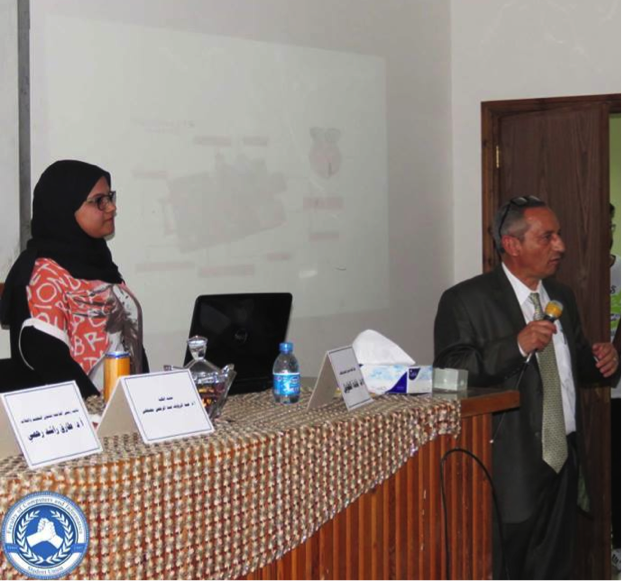

Faculty of Computers and Informatics
Suez Canal University
لمزيد من التفاصيل عن المشاريع واعضاء الفريق المشاركه فى تنفيده تحميل وصف كامل للمشاريع اضغط هنا للتحميل
أفكارهم أمل المستقبل
ضمن فعاليات الملتقى العلمي الأول لكلية الحاسبات والمعلومات تحت رعاية السيد الأستاذ الدكتور / طارق رحمي نائب رئيس الجامعة لشئون التعليم و الطلاب و بحضور كل من عميد الكلية أ.د / عبد الرؤوف عبد الرحمن مصطفى ووكيل الكلية لشئون التعليم و الطلاب أ.د/ غادة الطويل ووكيل الكلية للدراسات العليا أ.د/ جميل سيد عبد العظيم وتحت إشراف أعضاء هيئة التدريس والهيئة المعاونة بكافة أقسام الكلية عرض طلاب السنة النهائية بالكلية " البكالوريوس " أفكار مشاريع التخرج الخاصة بهم والتي يقوم أغلبها على تقديم خدمة ومنتج يفيد المجتمع وقد تضمنت أفكار إبداعية ومبتكرة . مشاريع الطلاب قائمة على مواكبة التطور التكنولوجي السريع الذي نشهده والإستفادة منه في تحسين جوانب تتعلق بالحياة اليومية عن طريق : • الإستفادة من الألعاب الإلكترونية : - بحيث تساهم في مجال التعليم وخاصة ما قبل الجامعي بحيث تضيف متعة للمناهج الدراسية فتعمل على سهولة استيعاب بعض المواد العلمية التي يصعب حفظها " كالمعادلات الكيميائية " - بشكل تخصصي في تعليم لغات البرمجة بطريقة مبسطة . كما صمم الطلاب بعض التطبيقات التي : - تساهم في زيادة التعليم الإلكتروني عن طريق تحويلها لمحاكاة تفاعلية مع المتلقي . - تفيد في مجال السلامة والحماية المدنية عن طريق التحكم عن بعد في المنازل وتحديد مصادر الخطر التي يمكن التعرض لها وتوصيل ذلك بالهواتف النقالة . - تساهم في حل مشاكل تواجه الطلاب أثناء التسجيل في المدن الجامعية بحيث تعمل على تخفيف العبء على الطالب والموظف المسئول وتقليل المعاملات الورقية والرحلات المتكررة لإستيفاء متطلبات القبول . عرضت كل مجموعة فكرة المشروع وعناصره ونسبة الإنتهاء من كل عنصر ولغات البرمجة المستخدمة في إعداد التطبيقات وطرق العرض والهدف من كل مشروع وكيفية الإستفادة منه . وقد أثمر عرض المشروعات عن خلق حالة من العصف الذهني والتساؤلات للطلاب من الفرق الأصغر وزيادة روح المناقشة وإضافة أفكار جديدة ومقترحات على المشاريع العديد من أفكار المشروعات والتطبيقات يمكن توسيع مجال استخدامها والإستفادة منها في العديد من الجوانب كما يمكن نشر تطبيقات تفعل فكرة الحكومة الذكية في المصالح والهيئات والجامعات بحيث تعظم الإستفادة من الوقت والجهد وتواكب التطور التكنولوجي الحالي . شباب حاسبات أفكاركم تفتح بوابة أمل للمستقبل ،،، دمتم مبدعين . 
اتصل بنا
الاسماعيلية -الكيلو 4.5 -الطريق الدائرى - الجامعة الجديدة - كلية الحاسبات والمعلومات
ت : 0643220267 (2+)
فاكس : 0643220267 (2+)
البريد الالكترونى:
fci_scu@yahoo.com
الموقع الرسمى:
http://ci.scuegypt.edu.eg